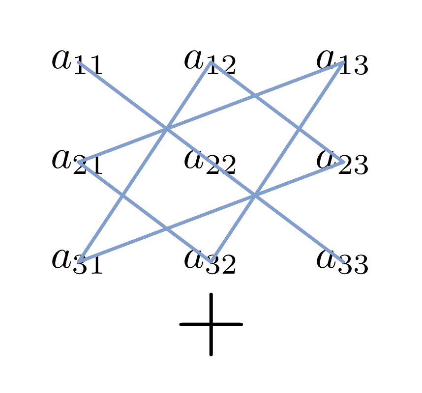
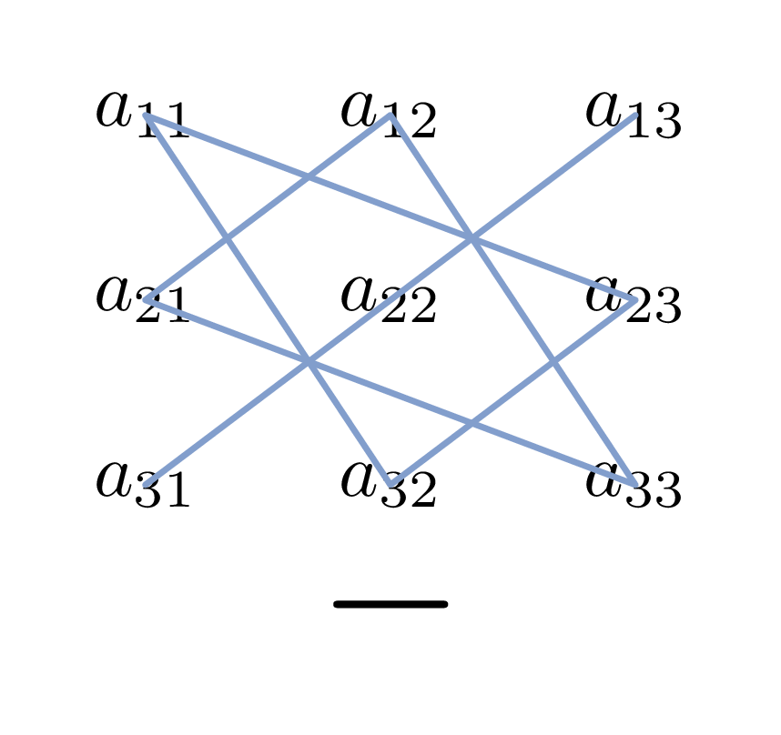

Matrices and Determinants
Matrices: $A, B, C$,
Elements of a matrix: $a_{i}, b_{i}, a_{ij}, b_{ij}, c_{ij}$,
Determinant of a matrix: $\det A$,
Minor of an element $a_{ij}$: $M_{ij}$,
Cofactor of an element $a_{ij}$: $C_{ij}$,
Transpose of a matrix: $A^{T}, \tilde{A}$,
Adjoint of a matrix: $\text{adj } A$,
Trace of a matrix: $\text{tr } A$,
Inverse of a matrix: $A^{-1}$,
Real number: $k$,
Real variables: $x_{i}$,
Natural numbers: $m, n$
1. Second Order Determinant: $$\det A = \begin{vmatrix} a_{1} & b_{1} \\ a_{2} & b_{2} \end{vmatrix} = a_{1}b_{2} - a_{2}b_{1}$$
2. Third Order Determinant: $$\det A = \begin{vmatrix} a_{11} & a_{12} & a_{13} \\ a_{21} & a_{22} & a_{23} \\ a_{31} & a_{32} & a_{33} \end{vmatrix} = a_{11}a_{22}a_{33} + a_{12}a_{23}a_{31} + a_{13}a_{21}a_{32} - a_{11}a_{23}a_{32} - a_{12}a_{21}a_{33} - a_{13}a_{22}a_{31}$$
3. Sarrus Rule (Arrow Rule):
This rule provides a visual method for calculating the third-order determinant using the diagonals shown in Figure 1.


4. N-th Order Determinant: $$\det A = \begin{vmatrix} a_{11} & a_{12} & \dots & a_{1j} & \dots & a_{1n} \\ a_{21} & a_{22} & \dots & a_{2j} & \dots & a_{2n} \\ \vdots & \vdots & \ddots & \vdots & \ddots & \vdots \\ a_{i1} & a_{i2} & \dots & a_{ij} & \dots & a_{in} \\ \vdots & \vdots & \ddots & \vdots & \ddots & \vdots \\ a_{n1} & a_{n2} & \dots & a_{nj} & \dots & a_{nn} \end{vmatrix}$$
5. Minor: The minor $M_{ij}$ associated with the element $a_{ij}$ of an $n$-th order matrix $A$ is the $(n-1)$-th order determinant derived from the matrix $A$ by deletion of its $i$-th row and $j$-th column.
6. Cofactor: $$C_{ij} = (-1)^{i+j}M_{ij}$$
7. Laplace Expansion of n-th Order Determinant:
Laplace expansion by elements of the $i$-th row:
$$\det A = \sum_{j=1}^{n} a_{ij}C_{ij}, \quad i = 1, 2, \dots, n$$
Laplace expansion by elements of the $j$-th column:
$$\det A = \sum_{i=1}^{n} a_{ij}C_{ij}, \quad j = 1, 2, \dots, n$$
1. Transposition: The value of a determinant remains unchanged if rows are changed to columns and columns to rows. $$\begin{vmatrix} a_{1} & a_{2} \\ b_{1} & b_{2} \end{vmatrix} = \begin{vmatrix} a_{1} & b_{1} \\ a_{2} & b_{2} \end{vmatrix}$$
2. Interchanging Rows or Columns: If two rows (or two columns) are interchanged, the sign of the determinant is changed. $$\begin{vmatrix} a_{1} & b_{1} \\ a_{2} & b_{2} \end{vmatrix} = -\begin{vmatrix} a_{2} & b_{2} \\ a_{1} & b_{1} \end{vmatrix}$$
3. Identical Rows or Columns: If two rows (or two columns) are identical, the value of the determinant is zero. $$\begin{vmatrix} a_{1} & a_{1} \\ a_{2} & a_{2} \end{vmatrix} = 0$$
4. Multiplied by a common factor: If the elements of any row (or column) are multiplied by a common factor, the determinant is multiplied by that factor. $$\begin{vmatrix} ka_{1} & kb_{1} \\ a_{2} & b_{2} \end{vmatrix} = k\begin{vmatrix} a_{1} & b_{1} \\ a_{2} & b_{2} \end{vmatrix}$$
5. Row or column operations: If the elements of any row (or column) are increased (or decreased) by equal multiples of the corresponding elements of any other row (or column), the value of the determinant is unchanged. $$\begin{vmatrix} a_{1}+kb_{1} & b_{1} \\ a_{2}+kb_{2} & b_{2} \end{vmatrix} = \begin{vmatrix} a_{1} & b_{1} \\ a_{2} & b_{2} \end{vmatrix}$$